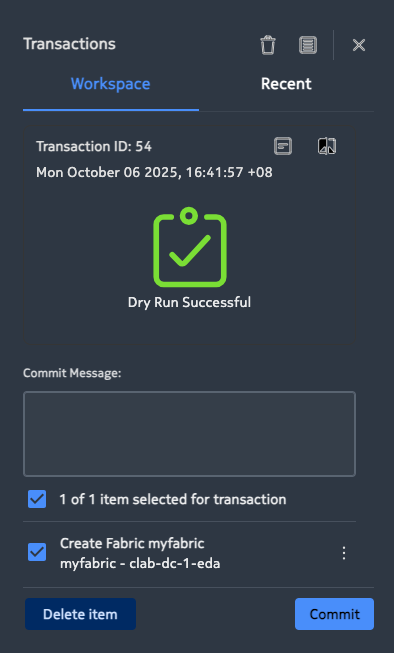

🏗️ Part 1: Fabric Intent Creation & Verification
EDA Fabric: Intent Creation & Status Verification
This guide provides a step-by-step workflow to create a fabric intent for an CLOS leaf–spine IP underlay in Nokia EDA and verify the resulting fabric status and node configuration.
📋 Table of Contents
- Overview
- Prerequisites
- Quick Summary
- Exercise 1: Build the Fabric
- Step 1: Create the Fabric Intent
- Step 2: Transaction Dry-Run & Review
- Step 3: Commit the Intent
- Step 4: Check Fabric Health & Summary
- Step 5: Drill Down - Leafs, Spines, Routers
- Step 6: Verify on Devices (SR Linux)
- Troubleshooting & Tips
- What's Next?
👨🏻💻 Overview
In this lab, you will:
- Create a fabric intent to automate underlay configuration
- Use EDA's dry-run feature to preview changes safely
- Deploy the fabric intent across your leaf-spine topology
- Verify fabric health through EDA's GUI
- Validate configurations directly on SR Linux devices
Estimated time: 45 minutes
☑️ Prerequisites
Before starting, ensure you have:
- An operational EDA environment with GUI access
- A discovered/imported topology (leafs/spines)
- Pre-created allocation pools:
- System IPs
- Inter-switch /31 pools
- ASN pool
- Labels on nodes and links to distinguish:
- Leaf nodes (
eda.nokia.com/role=leaf) - Spine nodes (
eda.nokia.com/role=spine) - Inter-switch links (
eda.nokia.com/role=interSwitch)
Note: This guide assumes pools and selectors already exist and references them by name in examples.
🚀 Quick Summary
| Step | Action |
|---|---|
| 1 | Create a fabric intent in EDA with required parameters |
| 2 | Add to transaction and run dry-run to preview changes |
| 3 | Review summary: input CRs, changed CRs, intents run, nodes impacted |
| 4 | Commit the transaction to push configuration to nodes |
| 5 | Check fabric health & summary in GUI; drill down to entities |
| 6 | Verify on devices: interfaces, network-instance, routes, BGP neighbors |
📖 Exercise 1: Build the fabric
Step 1: Create the Fabric Intent
Navigate to Fabrics → Create in the EDA GUI and configure the following parameters:
| Parameter | Value |
|---|---|
| Name | myfabric |
| Namespace | clab-dc-${GROUP_ID}-eda |
| IPv4 Pool – System IP | systemipv4-pool |
| Leaf Node Selector | eda.nokia.com/role=leaf |
| Spine Node Selector | eda.nokia.com/role=spine |
| InterSwitchLinks Unnumbered | IPV6 |
| Link Selector | eda.nokia.com/role=interSwitch |
| Underlay Protocol | EBGP |
| Underlay Protocol – Autonomous System Pool | asn-pool |
| Overlay Protocol | EBGP |
See the below screenshot for reference:

What happens next? When committed, EDA evaluates each topology node against the selectors (leaf/spine), allocates IPs and ASNs from the configured pools, and generates node configurations automatically.
Step 2: Transaction Dry-Run & Review
After creating the fabric intent:
- ➕ Add it to a transaction
- ✍️ Add a commit message
- 🔍 Click Dry-run
Expected output:

{kind=link}
What is Dry-Run?
EDA executes the intent without changing any node, allowing you to validate everything safely. The summary displays:
- 📊 Intent runs
- 🔄 Changed CRs
- 🖥️ Nodes with changes
Explore the Details
| Column | What to Inspect |
|---|---|
| Input CRs | Configuration resources being provided |
| Changed CRs | EDA building blocks: interfaces, routers, BGP groups/peers, policies |
| Intents Run | Which intents were executed |
| Nodes with changes | Affected devices |
{kind=link}
View Configuration Diffs
Use the Diff view to compare per-node configuration before/after:
- Example: A leaf may gain
subinterface 0with a/31address on an inter-switch link, allocated from your subnet pool
⚠️ Important: Dry-run makes no changes. A device (e.g.,
leaf3) will still show only its pre-existing config until you commit.
Step 3: Commit the Intent
- Return to the transaction basket
- Click Commit
EDA will push all resulting configuration changes to the nodes.
✅ The transaction will show "Commit Successful" when complete.
Step 4: Check Fabric Health & Summary
Navigate to Fabrics and view the fabric status.
Health Score
EDA reports a health score (e.g., 100%) computed from:
- 🔀 Routers (network-instances)
- 🔗 Links
- 🤝 BGP peers
Summary View
Switch to the Summary view to see:
- 📈 Graphical breakdown of fabric building blocks:
- Default interfaces/routers
- Inter-switch links
- Default BGP peers
- 📊 Trend of learned routes across the fabric
{kind=link}
Step 5: Drill Down - Leafs, Spines, Routers
From the Summary view, explore the fabric components:
| Component | Action | What to Verify |
|---|---|---|
| Leafs | Click view on Leafs | Node details including assigned underlay ASNs |
| Spines | Click view on Spines | Both spines share the ASN from asn-pool (e.g., 65000) |
| Default Routers | Click view on Default Routers | Router health and parameters (e.g., router-id from system IP pool) |
Step 6: Verify on Devices (SR Linux)
SSH to a spine (e.g., spine1) and verify the configuration.
🔌 Interfaces
Check interfaces and addresses on routed subinterfaces:
show interface
Expected output:
- Routed subinterfaces:
- On leaf: ethernet-1/49.0, ethernet-1/50.0
- On spine: ethernet-1/1.0, ethernet-1/2.0
- /64 link-layer IPv6 addresses
- system0.0 loopback with the system IP
🌐 Network Instance
Inspect the default network-instance and BGP config:
info network-instance default
Expected configuration:
- Default network-instance with router-id (system IP)
- Routed interfaces added by the fabric intent
- BGP enabled with configured autonomous-system and eBGP defaults
🗺️ Route Table
View routes in the default network-instance:
show network-instance default route-table
Expected routes:
- /32 system routes for leaf/spine nodes
- Next-hops over the IPv6 link-layer IPv6 addresses
🤝 BGP Neighbors
Confirm BGP sessions to leafs (IPv4-unicast + EVPN):
show network-instance default protocols bgp neighbor
Expected neighbors:
- eBGP neighbors to leafs from spines and eBGP neighbors to spines from leafs
- AFI/SAFI: ipv4-unicast, ipv6-unicast (underlay) and evpn (overlay)
- Status: Established
- Matches the fabric intent (EBGP for both underlay and overlay)
🛠️ Troubleshooting & Tips
❓ Dry-run shows changes, but devices didn't update
**Answer:** This is **expected behavior**. Dry-run does not touch devices—it only previews changes. **Solution:** Commit the transaction to push changes to devices.❓ Unexpected node count in Summary
**Issue:** The fabric shows fewer nodes than your topology (e.g., 3 leafs visible when topology has 4). **Solution:** Use the Summary drill-downs to investigate: - Label/selector coverage - Intent scope - Node discovery status❓ How to validate diffs per node?
**Solution:** Use the **Diff view** to confirm exactly what EDA intends to configure: - Interfaces - BGP groups/peers - Policies❓ BGP sessions not establishing
**Possible causes:** - IP address allocation errors - ASN mismatches - Interface not operationally up **Solution:** 1. Verify interface status: `show interface brief` 2. Check BGP configuration: `info network-instance default protocols bgp` 3. Review EDA transaction logs for errors🎓 What's Next?
Congratulations! You've successfully created and verified your fabric underlay using EDA intents.
Next steps:
- 🔄 Part 2: Service Overlays - Build EVPN-VXLAN services on top of your fabric
- 🔍 Part 3: Deviations & EQL - Monitor and query your network state
📚 Additional Resources
Ready for Part 2? 🎯 Continue to Service Overlays